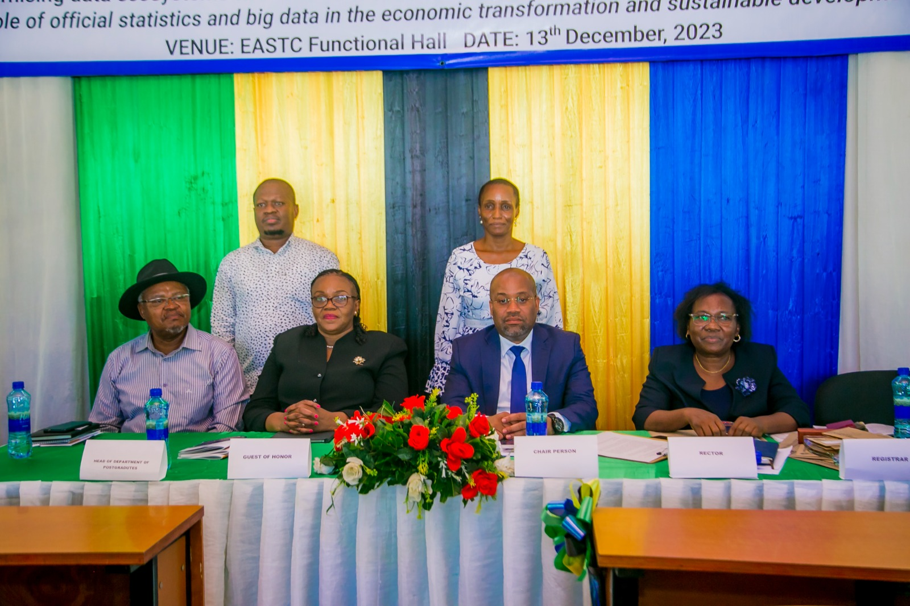

Gallery



Eastern Africa Statistical Training Center (EASTC) has a great pleasure to invite you in their 7thConvocation ceremony of the year 2024.EASTC continues with the tradition within academic institutions of gathering together academicians,students, alumni,benefactors and industry proffesionals as stakeholders of the university community.
This year's convocation has selected the topic "The emerging data science and digital innovation ecosystem of Tanzania" as the standing point to reflect on the theme of this year's 18 November African Statistics Day. The theme states "Strengthening data systems by modernizing production and use agriculture statistics: informing policies with the view to improve resilience in agriculture, nutrition and food security in Africa"
| Time | Activity | Responsibilities |
|---|---|---|
| 9:00 - :30 | Registration | Ali, Secretary |
| 9:30 - 9:35 | Presenting the program | M.C |
| 9:30-9:45 | Introduction of Guests & Welcoming remarks | President of the Convocation |
| 9:45-10:00 | Opening Remarks, Consulting the convocation & Preamble to award presentation | Rector |
| 10:00-10:20 | Awarding prizes to the best students | Rector,Guest of honor |
| 10:20-10:40 | Awarding prizes to EASTSO leaders | Rector,Guest of honor |
| 10:40-11:10 | Keynote Address:Government support and enable of digital economy & start up ecosystems that use data | Guest of Honor (ICT commission) |
| 11:10-11:30 | 1stPresentation:The Emerging Data Science and Digital ecosystem of Tanzania | Mr. John Bentisa |
| 11:30-11:50 | 2ndPresentation: Undestanding the concept of Big Data and its challenges in Higher Learning Institutions | Dr.David Msokwe |
| 11:50-12:15 | 3rdPresentation:Role of Statistical Literacy in Agriculture Productivity: Evidence from small holder's farmers | Ms Joan A. Kasilima |
| 12:15-12:45 | 4thPresentation:The Relevance of Data Science in the Production of Official Statistics | Hamenya KASASE |
| 12:45-12:50 | Departure Remarks of Guest of Honor | Rector & Guest of Honor, Invited Guest |
| 12:50-13:00 | Group Photo | MC |
| 13:00-14:00 | HEALTH BREAK | Rector & all invited Guests |
| 14:00-14:30 | Annual General Meeting of members of EASTSO Convocation | President of convocation & EASTC Students & Alumni |
| 14:30-15:00 | Vote of thanks and Closing | President and Secretary of the Convocation |
VENUE: Function Hall
PLACE: Changanyikeni, Dar es Salaam